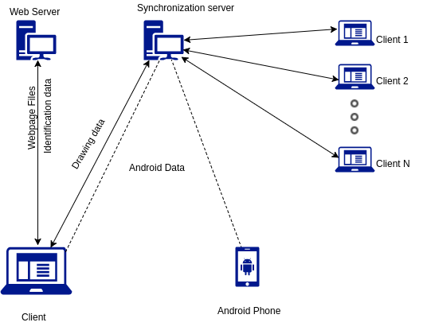
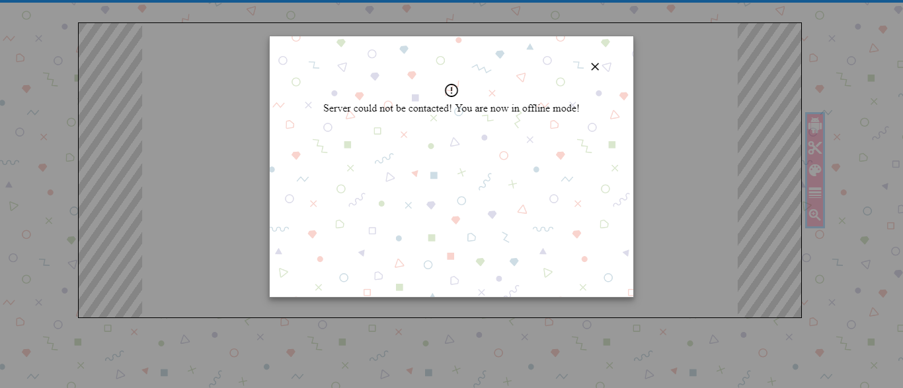

Documentation APix
Abstract
APix is a web application that highlights teamwork and mobility in a small simple package, to enable users to draw collaboratively on a single canvas. Its working enviroment is a web browser (desktop and mobile orientated) but also offers its users to use their phone as a pointer for drawing on the canvas via an Android application.
Motivation
Similar applications, even though have a lot of drawing capabilities, do not offer support for alternative pointing devices, like the phone inside your pocket! [Experimental] -- responsive and good handle for static images
Application summary
Web
APix is a web based application where people can draw together on a web browser, on desktop or mobile, which offers multiple functionalities:
- customizable canvas dimensions
- import a background image from any device
- basic drawing tools: brush thickness, color, eraser
- zooming and scrolling inside canvas
- export drawing in PNG/JPEG format
- collaborative work via shareable link
Android
On a android side we developed a simple application using a "hybrid" approach, meaning that we create the user interface using HTML5, CSS3 and Javascript, which are interpreted inside an WebView component of the Android OS. It is currently still in an experimental state, due to the imprecision of accelerometers for the tasks we want to achieve (use it as as pointer). Some calibration could prove this feature usable, but this is out of the scope of the project.
Application arhitecture

Fig. 1 - Application arhitecture diagram
The workflow of the application
Upon entering on the website the user will be prompted with a dialog to set up the canvas suited for his needs:
- width and height of the canvas
- image - button to upload an image background
Fig. 2 - Initial settings dialog
Before preceding to the next step, the user may be prompted with another dialog,
in case the connection with the server could not be established.

Fig. 3 - Network error dialog
After submitting the initial settings he will be prompted to the actual working space: the canvas with the desired dimensions where he will observe various functionalities right next to the actual canvas:
- content_cut - eraser
- palette - changing color input
- line_weight - change brush thickness
- zoom_in - enable zoom and scrolling inside canvas
Fig. 4 - Actual working space
After the user got accustomed to drawing on the canvas and using all provided features, he has several options left. The options are revealed by pressing the menu icon in the top-left corner of the page and they consist of:
- file_downloadPNG - to export drawing in PNG format
- file_downloadJPEG - to export drawing in JPEG format
- group_add - to generate a shareable link to be sent to another drawing partner
- refresh - to start a new, fresh session of drawing
Fig. 5 - Side menu for different features
Android companion - experimental
The android companion is a simple-to-use app providing basic functionalities, enabling the device to be used as a pointer for APIx. On the main page, the application will render a HTML file linked to a Javascript file , which contains buttons for turning the pointer on and off, changing the color with which we are drawing, changing the brush thickness. Due to the experimental nature of the feature, we didn't put much effort on usability or user experience. As such, it currently connects automatically to the client with client id 1 (hardcoded value), and the pointer has its initial position hardcoded as well (100,100). The plan was to make to connection to the client via QR codes generated by the client, and could be implemented after solving its viability-as-a-pointer problems.
Fig. 6 - Android Landing Page

Fig. 7 - Android Mainpage
Technologies
Client Side
TO ADD: background/drawable chache, creating from scratch the zoom functionalityTo create APix we have used HTML5, CSS3 and JavaScript for the frontend part but also some Material Design icons and suggestions for a pleasant UI. The project has been created without any external libraries for javascript and for that reason, HTML5 features & pure javascript to obtain different desired effects.
The canvas element from HTML5 has been used repeatedly as the main object of this project was to be able to draw in a browser. We used 3 canvases: background_canvas, drawable_canvas and visor_canvas. The main point from this layering was to separate different meaning canvases:
- the background_canvas - to store a image as background, which would not be changed
- the drawable_canvas - the canvas on which we actually draw and needed to be updated regularly
- the visor_canvas - the view to the first 2 canvases, taking into account the scrolling and the zoom used by the user
Regarding javascript, we invested a lot of work into it as we needed to use only pure javascript. Because of this we implemented first basic functions: color choice, line thickness and upload of image background. Later on we tackled the issue of providing a reliable zoom effect and scroll effect. The zoom effect was later updated, to take into account the position of the mouse in order to zoom in a specific area where the mouse was pointing.
Server Side
For the server side we decided to use cloud-computing solutions,
specifically Elastic Beanstalk for the Web server, and
the more general Elastic Compute Cloud for the Synchronization server
We designed the architecture specifically to be able to detach those two components, and they are currently running
on two different hosts.
We implemnted our solutions in Python, motivated by the speed with which one can get a server up and running using
Flaskfor the Web server and Autobahn
for the Synchronization server. We made heavy use of HTML5 Websockets
specification as well to manage the transfer of data in a faster and reliable way -- crucial aspect since our
web application is a real-time collaborative application.
The Synchronization server is based on our adaptation of the Publish-Subscribe paradigm
where clients are both publishers and subscribers of a single topic (session in our case). This enables them to
always stay up-to-date with the latest messages (drawing data updates) of the topic they are subscribed to.
Another interesting solution was to use Selenium, which is
usually used to write tests for web pages, to always store a state of the canvases of different sessions, states
which will be used in case a new client wants to join the session (the server will send the current state of
the canvas to the client). We utilised Selenium by reading the updates sent by the clients and applying them
to a page (stored in S3) rendered in a headless Firefox browser, and to act as a intermediary between the Python code and the
Javascript executed by the browser.
Android side
For the Android side we developed the solution using as much Javascript and as little native Android tools as possible. Thus, we made use of the DeviceMotionEvent experimental technology to capture accelerometer data and try to use it to capture the movement of the device. It turns out that the accelerometers used in Android devices aren't precise enough to measure the distance travelled by the device, and thus cannot be used properly as pointers without some transformation techniques. At the moment there are some transformations in place which make the phone behave a bit more controllable, but they need some adjustments. Please refer to the code for more details.
Development method
For the development process we used GitHub to track down progress and fix bugs that appeared at some point. For new features we will create new branches which, after finishing the implementation, will be added to the master branch. Also, when trying to implement new features we usually created a new branch for further research and not to stop the development the project.
Task distribution
- Cristian Huma
- Frontend HTML5+CSS
- Backend Javascript + Php
- Documentation and demo
- Corodescu Alin Andrei
- Frontend HTML5+CSS
- Backend Javascript + Php
- Integration Android
- Documentation and demo